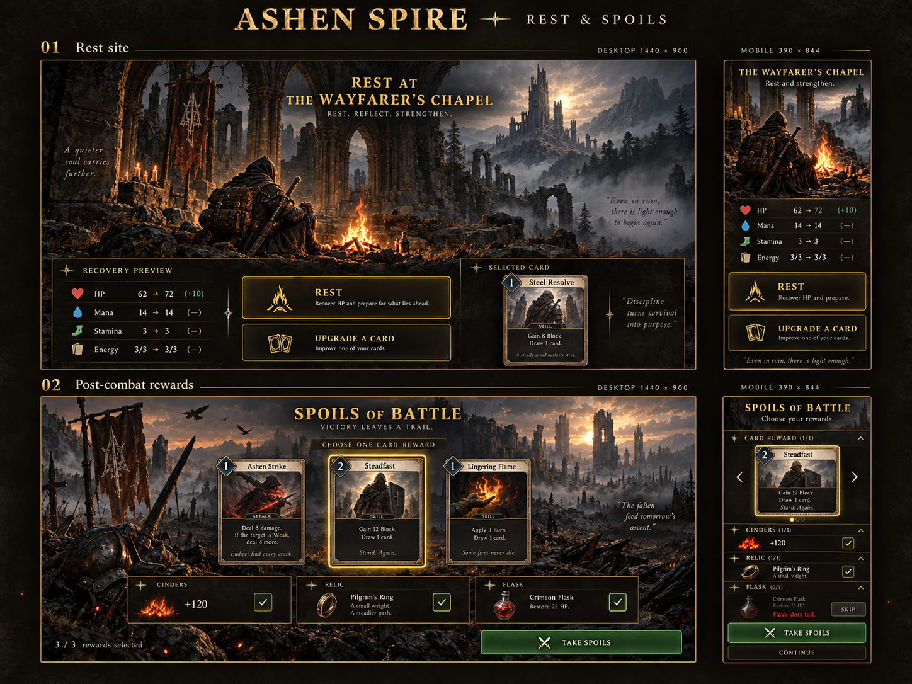
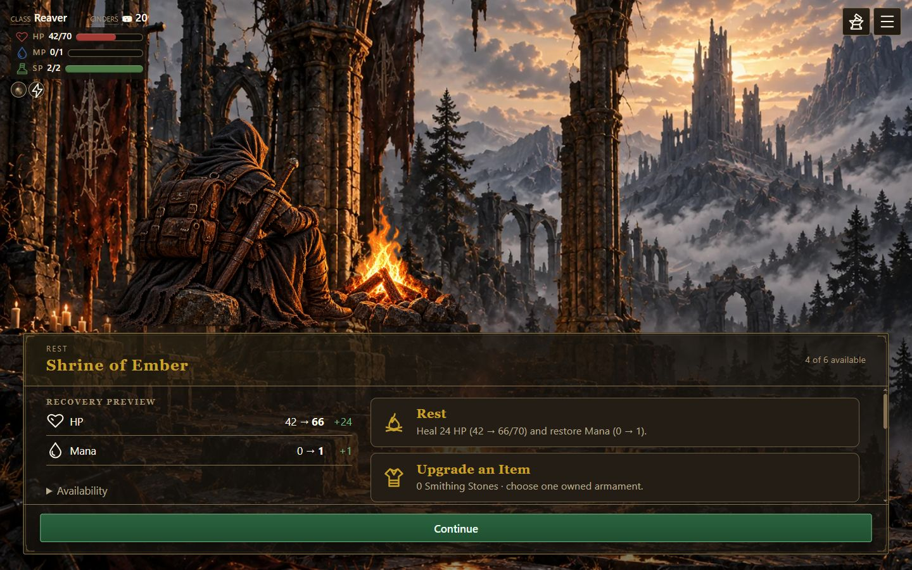
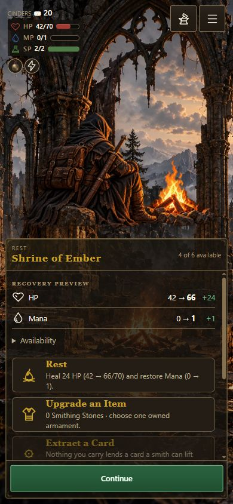

Reference: board 09

Implementation: desktop

Implementation: 390×844

Board 09 is a composite concept sheet. Compare the upper rest scene's layers and hierarchy; its crop differs from the 1440×900 runtime. Runtime service names and recovery values remain canonical.


